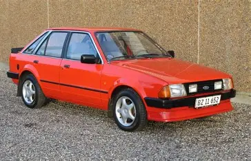

Lançado em 1983, o Escort trouxe suspensão independente e várias opções de acabamento, tornando-se um dos compactos mais desejados do país.
Galeria


Destaques
- Lançamento: chegou em 1983 para disputar o mercado médio com conforto e estilo.
- Design: linhas esportivas e opções de três ou cinco portas.
- Versões: básico, L, GL, Ghia e XR3, sendo o XR3 o mais desejado.
- Motorização: motores CHT 1.35L e 1.6L, e mais tarde AP 1.8L na era Autolatina.
Vídeo em destaque
Curiosidades
- Foi desenvolvido como carro global e fabricado em vários países.
- A Autolatina trouxe motores Volkswagen AP para o Escort.
- O XR3 conversível foi um dos grandes ícones dos anos 80.
- O modelo recebeu edições especiais comemorativas durante sua produção.